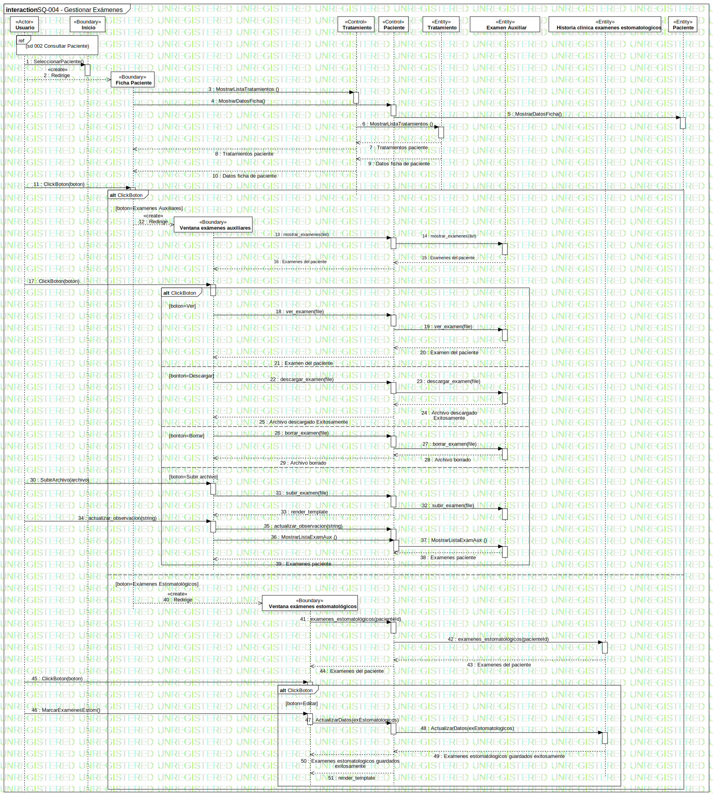

SQ-004 Gestionar Exámenes
UMLInteraction
Dentware
::
Modelo de diseño
::
Modelo de interacción
::
SQ-004 Gestionar Exámenes
Description
none
Diagrams

004 - Gestionar Exámenes
Fragments
InteractionUse1
ClickBoton
ClickBoton
ClickBoton
Participants
«Actor»Usuario
«Boundary»Ficha Paciente
«Boundary»Inicio
«Boundary»Ventana exámenes auxiliares
«Control»Paciente
«Entity»Paciente Examen Auxiliar
«Boundary»Ventana exámenes estomatológicos
«Entity»Historia clinica examenes estomatologicos
«Control»Tratamiento
«Entity»Tratamiento
«Entity»Paciente
Messages
SeleccionarPaciente() (Usuario→Inicio)
Redirige (Usuario→Ficha Paciente)
MostrarListaTratamientos () (Ficha Paciente→Tratamiento)
MostrarDatosFicha() (Ficha Paciente→Paciente)
MostrarDatosFicha() (Paciente→Paciente)
MostrarListaTratamientos () (Tratamiento→Tratamiento)
Tratamientos paciente (Tratamiento→Tratamiento)
Tratamientos paciente (Tratamiento→Ficha Paciente)
Datos ficha de paciente (Tratamiento→Tratamiento)
Datos ficha de paciente (Tratamiento→Ficha Paciente)
ClickBoton (Usuario→Ficha Paciente)
Redirige (Ficha Paciente→Ventana exámenes auxiliares)
MostrarListaExamAux () (Ventana exámenes auxiliares→Paciente)
MostrarListaExamAux () (Paciente→Paciente Examen Auxiliar)
Examenes del paciente (Paciente Examen Auxiliar→Paciente)
Examenes del paciente (Paciente→Ventana exámenes auxiliares)
ClickBoton (Usuario→Ventana exámenes auxiliares)
MostrarExamAux (Ventana exámenes auxiliares→Paciente)
MostrarExamAux (Paciente→Paciente Examen Auxiliar)
Examen del paciente (Paciente Examen Auxiliar→Paciente)
Examen del paciente (Paciente→Ventana exámenes auxiliares)
DescargarExamAux (Ventana exámenes auxiliares→Paciente)
DescargarExamAux (Paciente→Paciente Examen Auxiliar)
Archivo descargado Exitosamente (Paciente Examen Auxiliar→Paciente)
Archivo descargado Exitosamente (Paciente→Ventana exámenes auxiliares)
BorrarExamAux (archivo) (Ventana exámenes auxiliares→Paciente)
BorrarExamAux (Paciente→Paciente Examen Auxiliar)
Archivo borrado (Paciente Examen Auxiliar→Paciente)
Archivo borrado (Paciente→Ventana exámenes auxiliares)
SubirArchivo (Usuario→Ventana exámenes auxiliares)
GuardarArchivo (Ventana exámenes auxiliares→Paciente)
GuardarArchivo (Paciente→Paciente Examen Auxiliar)
MostrarListaExamAux () (Ventana exámenes auxiliares→Paciente)
MostrarListaExamAux () (Paciente→Paciente Examen Auxiliar)
Examenes paciente (Paciente Examen Auxiliar→Paciente)
Examenes paciente (Paciente→Ventana exámenes auxiliares)
Redirige (Ficha Paciente→Ventana exámenes estomatológicos)
MostrarListaExamEstom() (Ventana exámenes estomatológicos→Paciente)
MostrarListaExamEstom() (Paciente→Historia clinica examenes estomatologicos)
Examenes del paciente (Historia clinica examenes estomatologicos→Paciente)
Examenes del paciente (Paciente→Ventana exámenes estomatológicos)
ClickBoton (Usuario→Ventana exámenes estomatológicos)
MarcarExamenesEstom() (Usuario→Ventana exámenes estomatológicos)
ActualizarDatos (Ventana exámenes estomatológicos→Paciente)
ActualizarDatos (Paciente→Historia clinica examenes estomatologicos)
Examenes estomatologicos guardados exitosamente (Historia clinica examenes estomatologicos→Paciente)
Examenes estomatologicos guardados exitosamente (Paciente→Ventana exámenes estomatológicos)
Properties
Name
Value
name
SQ-004 Gestionar Exámenes
stereotype
null
visibility
public
isReentrant
true
Owned Elements
004 - Gestionar Exámenes